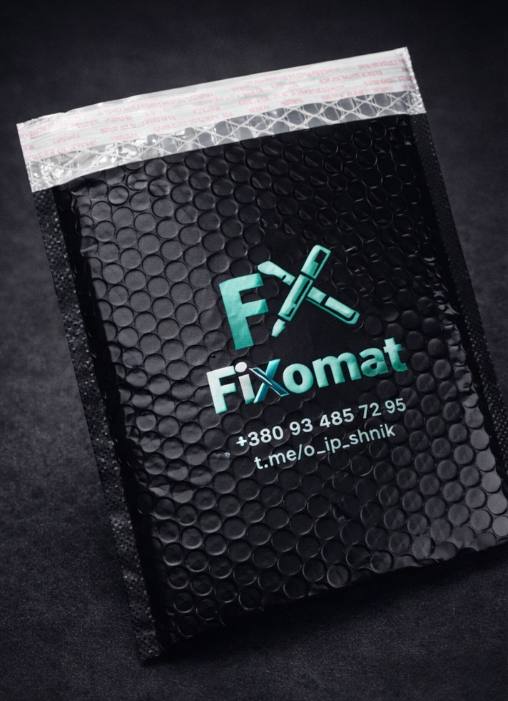

📦 Як відправити пристрій
Нижче — проста покрокова інструкція, щоб ви могли швидко і без зайвих питань відправити техніку на ремонт.
1
Записуєте відео
Покажіть проблему та надішліть відео в наш Telegram.
2
Ми погоджуємо адресу
Ми скажемо, на який поштомат відправляти посилку.
3
Упаковуєте пристрій
Покладіть телефон у коробку або м’який пакет і віднесіть у поштомат.
4
Ми ремонтуємо
Після ремонту ми надішлемо вам пристрій назад.
📬 Як виглядає упаковка при поверненні
Після ремонту ваш пристрій повертається в пупирчастому (bubble) конверті з нашим логотипом і контактами Fixomat. Всередині — ваш відремонтований пристрій та подарунок від Fixomat.
